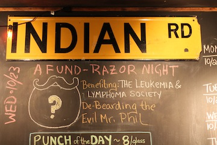
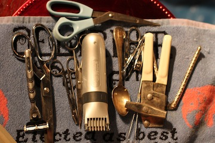
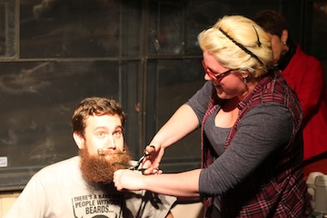
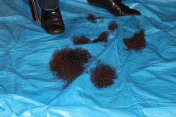
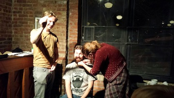
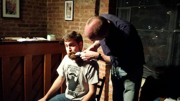
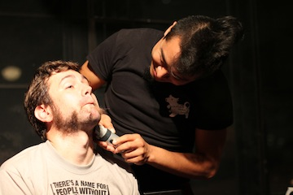
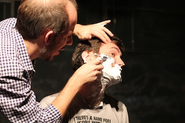
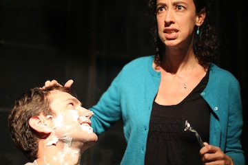

Wednesday's Fund-Razor was successful beyond anything I could have hoped for. Not only was everyone exceedingly generous with their money and with their time, but it actually made me enjoy shaving. Shaving for the first time in two years reminded me how nice it feels to be clean shaven. (Shaving for the second time in two years the next morning reminded me how much shaving sucks.)

The Fund-Razor Night was raising money for The Leukemia & Lymphoma Society and we did a fantastic job. We collected $1079 via crowdrise.com/IRCPQ and an additional $284 that went directly to LLS for a total of $1363. This amount will be matched by my employer, meaning the event raised $2726 for LLS!

By virtue of her superior donation, Devon earned the first cut. And, it was a good one. You could say it was a cut above the rest (though maybe you shouldn't).

It didn't take long for a pile of beard to start forming at my feet.

Yet, there was still a lot of beard on my face area, so people started coming up two-by-two. And some of those people used tweezers!

The mustache was quite resilient to more conventional cutting devices, so we had to use The Clippers! ...which got a bit jammed up by The Wax!

The Fund-Razor night may have become a Fund-Razor Morning if Fernando had not stepped up to do some serious shaving.

Shaving seemed to make a lot of people nervous. They didn't know that as Quizmasters we're required to have thick skin.

Not everyone liked what they saw once the beard was removed.

There are full versions and additional pictures to see on Google+ if you are so inclined. Thank you to Kennedy, Molly, Alicia, and Danielle for sending me the pictures they took.
If you were following along from home during the week leading up to the Fund-Razor than you may have seen some videos about what might be under my beard. Here's your final installment:
Thank you from the bottom of my heart to Fenil, Mike the Lyon, Gav, Scott, Li-Wei, The Mysterious Mr Quin, B&N, Robin and Erin, Jennifer K., Geoff, Brenda, Ian and Joey, Noah, Nicole and Lev, Waffles, Friends, and Work, Devon, Rusty, Michael, Kennedy, Mark, Danielle, Miguel, Jude, and everyone who contributed Anonymously for being so generous. Additional thanks to everyone at The Indian Road Café who supported this event, OJ for hosting the event, Jennifer K. for making me a false beard in case I get lonely for my old friend the beard, Fernando for doing the challenging-but-necessary neck shaving, and everyone else who made the night go so "smoothly". I'm proud to know all of you, and it just proves my point that I'd rather be with you all than with the finest people in the world.
Thank you.